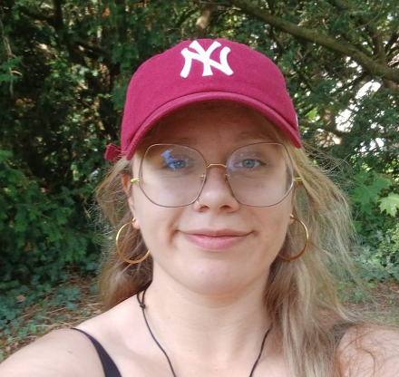
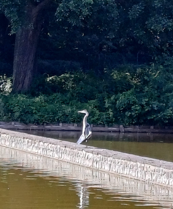
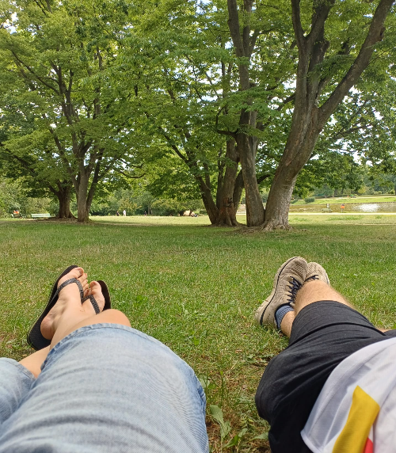
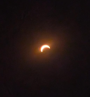
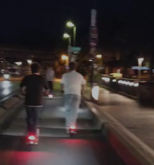
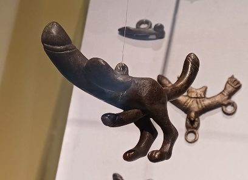
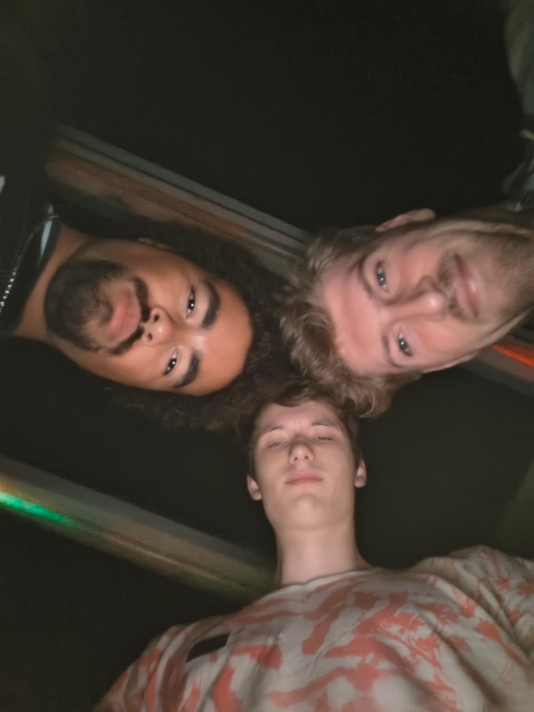
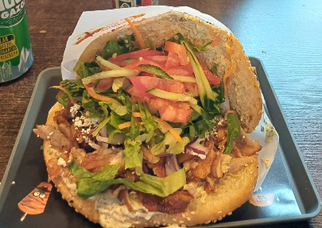

Op deze pagnia lees je mijn beleving van de 2026 vakantie in Berlijn met mijn vriendengroep. Ik vind Berlijn echt een leuke stad. Het is heel somber maar toch ook heel cool. Klik op de ander gekleurde teksen als je de linkjes wil zien :).
Aankomende vakantie ga ik naar Berlijn. Hier komen de updates
Vandaag (8 augustus 2026) ben ik me aan het voorbereiden op de reis. Na een hele paklijst gemaakt te hebben kwam ik erachter dat niet alles past in de koffer (-_-;). Ondertussen zijn we heen en weer aan het appen met de jongens en bespreken wie wat meeneemt en hoelaat we de trein nemen. We meeten om 7.45 op Nijmegen cs dus das vroeg. Ook hebben we gehoord dat we t huis uit geschopt worden als we te luid zijn in de rusturen. Ik ben benieuwd hoe het gaat zijn.
Hallo! Het is momenteel 17.19u en we zijn aangekomen in het huisje en hebben de kamers verdeeld. Vandaag hadden we de treinreis van 6 uur, met daar nog een uur vertraging bij (dus 7) zonder airco en met weinig beenruimte. Ik slaap met Aaron naast de voordeur. Naast ons slapen Faas en Daniel. Dan heb je tegenover ons hokje de gang en een badkamer. Daarnaast slapen Julian en Thomas en naast hun Timo en Jules. Dan eindigt de gang en heb je een tweede badkamer en tegenover de kamer van Jules en Timo de keuken. Op dit moment zijn de meeste jongens net gedoucht of aan het douchen en Faas is naast me eafc26 aan t spelen terwijl Aaron en Thomas achter me Duitse tv kijken.
Het is momenteel 20.24u. We hebben net gegeten bij een Aziatisch restaurant . Dit restaurant was super goedkoop en vullend. Timo had muy pittig eten gekozen en moest huilen. Vervolgens ging iedereen zelf proeven hoe pittig de pepers waren, waaronder ik (en toen kreeg ik de peper in mn oog (>w<)). Het is vandaag natuurlijk zondag in Duitsland dus we hebben geen open supermarkten. We zijn daarom net naar een kiosk geweest en hebben wat soda en drank gehaald. Daniel en ik chillen en de rest speelt een kaartspel.
Het is nu 23.17u. Ik heb net een korte presentatie aan de jongens gegeven. We gaan namelijk morgen met 6/8 mensen verstoppertje spelen door berlijn. Mocht je willen weten hoe dit werkt, zou ik deze video aanraden. Na veel voorbereid te hebben voor morgen duik ik vandaag vroeg het bed in, want morgen beginnen we vroeg met het spel. Slaaplekker en tot morgen!! :3
Hallo! het is 00.40 (eigenlijk dag 3 lol). Vandaag heb ik hide and seek met Aaron, Faas, Jules, Timo en Julian gespeeld. Ik ben een beetje salty omdat Aaron en ik hebben verloren en als enige groepje niet vals hebben gespeeld, maar daar valt niks meer aan te veranderen. Ook heb ik vandaag mijn thesis cijfer terug en ik ben erg blij met wat ik heb. Daarna heeft Thomas cocktails voor ons gemaakt, hebben we wat gechilled en zijn we naar bed gegaan. Morgen uitslapen en dan om 12u naar de Bundestag. Slaaplekker!!
Hallo! het is dag 4 13.46u. Gister zijn we naar de bundestag en stad geweest. Aaron en ik hebben de hele stad doorgezocht naar eclipsbriollen maar alles was helaas uitverkocht. Ik heb in de avond avg gekookt en we zijn uit geweest naar een club in RAW Gelände. Vandaag ga ik naar de stad om te winkelen. Ik gooi vanavond weer een update.
Het is nu 23.11u. Vandaag zijn we laat opgestaan en hebben we een chille ochtend gehad. Om 14u besloten Aaron en ik eropuit te gaan (de stad in) terwijl de rest achterbleef. Aaron ging naar het museumeiland en ik ging tweedehands winkelen. Om 16.30u was ik bij het planetarium waar je gratis brillen zou krijgen voor de verduistering. Niet meegerekend dat we in Duitsland waren stond er toen al een rij van dik 1km, dus zijn we in een park gaan zitten. Daarna zijn we met de rest van de jongens gaan eten bij een veganistisch restaurant. Ik ben ondertussen naar huis en een deel van de jongens is nog in de stad. Ik spreek jullie morgen weer!
Het is 16 augustus 21.46u. De vakantie zit erop en ik ben thuis. Het was een beetje een chaos maar wel leuk. Daarom komt de update ook nu pas.
Dag 5 zijn we gaan "touristmaxxen". Julian, Daniel, Aaron, Thomas en ik zijn naar checkpoint charlie en topographie des terrors geweest. Toen kwamen Jules en Timo aan en zijn we wezen winkelen in The Mall of Berlin. Thomas had lekkere nacho's gemaakt en we hebben gewoon een beetje gechilled.
Dag 6 hebben Faas en ik met ons twee opnieuw hide and seek gespeeld. Dit keer was het echt leuk. Faas had zich verstopt in een of ander gebied met hele hoge gebouwen en ik had me verstopt in een mooi buurtje dat een beetje leek op Londen. Die avond hebben we bij het beste dönerrestaurant van Berlijn gegeten. Julian, Faas, Aaron en ik wilden uit en zijn rondgestept tot we een coole club hadden gevonden, maar alles was mid. Julian en Faas waren Duitsland niet gewend en hadden dus geen cash mee toen we eindelijk door een rij van een club zijn gekomen. Uiteindelijk zijn we gaan zitten bij een Ierse pub die om 3 sloot en hebben we gewoon gechilled.
Dag 7 was de terugreisdag. Onze trein zou om 16.35 vertrekken en we hadden dus genoeg tijd om ervoor iets te doen. Dus Aaron, Jules, Faas, Julian en ik zijn naar een voetbalwedstrijd geweest van de 2. Bundesliga. In het Olympiastadion hebben we de wedstrijd hertha heidenheim gekeken. Daarna waren we (na een vermiste sleutel teruggevonden te hebben) op Berlin-Spandau station. Bleek, dat de trein 1,5u vertraging had (tuurlijk). Daardoor zouden we niet kunnen aankomen in Nijmegen met de trein, dus besloten Aaron en ik in Osnabrück uit te stappen en naar zijn ouders te reizen. Na in Münster aangekomen te zijn zouden we overstappen naar Dortmund, deze had (alweer) vertraging, nu 30 minuten. Toen die trein eindelijk was aangekomen besloten ze toch maar naar Lünen te rijden ipv door tot Dortmund. Met een verwachte aankomsttijd van 3u besloten Aaron en ik op te zoeken wat we van de DB terug zouden kunnen krijgen qua vergoeding en kwamen we erachter dat we een taxi konden nemen. Eenmaal aangekomen in Lünen belden we de taxi en zijn we gebracht naar Castrop-Rauxel Hbf en konden we eindelijk slapen.
Dag 8 werden we wakker en had de vader van Aaron een lekker ontbijtje voor ons gehaald. Ondertussen wat bijles gegeven en toen even naar de ijssalon geweest. Na geholpen hebben een zonnepaneel het dak op te sjouwen, werden aaron en ik thuisgebracht en kwamen we om 17.30 in Nijmegen aan. Ondertussen heb ik een wasje gedraaid, afgewassen en eten gekookt en ga ik zo lekker slapen, morgen verder opruimen en de fietsen van het station ophalen.










Op deze pagnia lees je mijn beleving van de 2026 vakantie in Berlijn met mijn vriendengroep. Ik vind Berlijn echt een leuke stad. Het is heel somber maar toch ook heel cool. Klik op de ander gekleurde teksen als je de linkjes wil zien :).